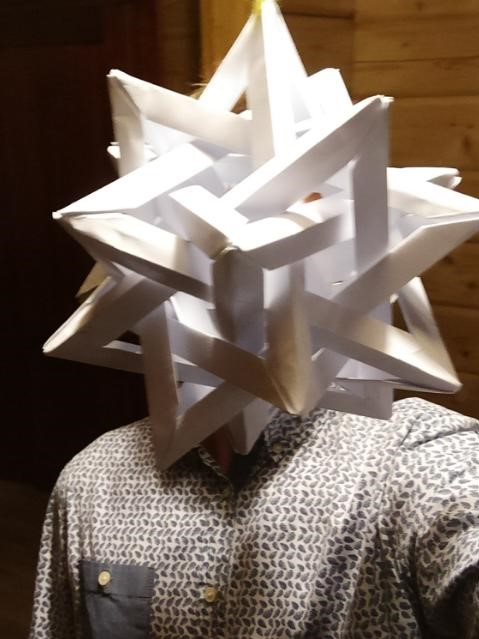
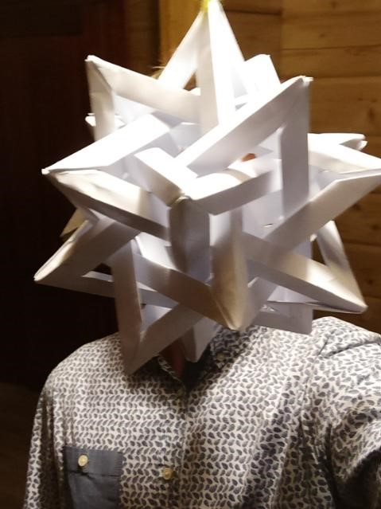

Par mums
Fizikas komandu olimpiādē katru gadu 5 cilvēku komandas no dažādām skolām sacenšas savā starpā, risinot sarežģītus un izaicinošus uzdevumus fizikā. Uzdevumu komplektā ir liela uzdevumu daudzveidība - īsi uzdevumi, gari un sarežģīti uzdevumi, demonstrējumi un laboratorijas darbi. Olimpiādes mērķis ir popularizēt fiziku skolēnu vidū, attīstīt prasmes strādāt komandā, kā arī sagatavot skolēnus valsts un starptautiska līmeņa olimpiādēm fizikā, iepazīstinot ar idejām, tehnikām un uzdevumiem, kas var parādīties šādās olimpiādēs. Pirmajā gadā mēs sastapāmies ar pārsteidzošu atsaucību, olimpiādē piedalījās 19 komandas, gandrīz 100 cilvēki. Pēc olimpiādes dalībnieki izrādīja pozitīvu atsauksmi par olimpiādes norisi un uzdevumu komplektu. Olimpiāde ievērojama ar apjomīgo balvu fondu, kas ir ievērojami lielāks nekā citām līdzīga tipa olimpiādēm. Olimpiāde tiks rīkota katru gadu, ar plāniem palielināt dalībnieku apjomu, kā arī dalībskolu un pilsētu skaitu.

.jpg "Ričards Knipšis")
.JPG "Daniels Gorovojs")
.JPG "Oskars Mednis")
.JPG "Vilhelms Cinis") 
